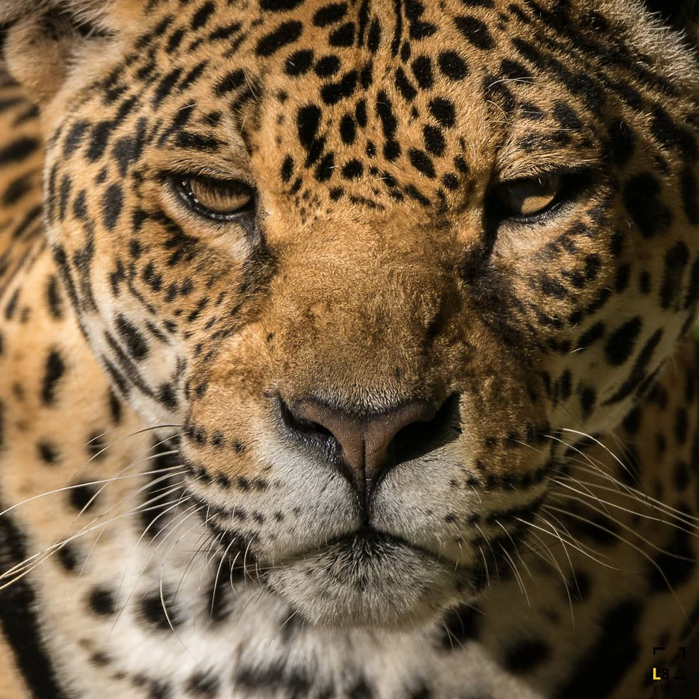

Báo đốm sống trên một loạt các địa hình có rừng và những nơi có không gian mở, nhưng môi trường sống ưa thích của chúng là rừng lá rộng ẩm nhiệt đới và cận nhiệt đới, đầm lầy và các khu vực nhiều cây cối. Báo đốm thích bơi lội và phần lớn là loài săn mồi đơn độc, tấn công mục tiêu theo kiểu tận dụng cơ hội, rình rập và phục kích, là động vật đứng đầu chuỗi thức ăn ở nơi mà chúng sinh sống. Là một loài chủ chốt, chúng đóng một vai trò quan trọng trong việc ổn định hệ sinh thái và điều chỉnh quần thể con mồi.

Trong khi thương mại quốc tế về báo đốm hoặc các bộ phận cơ thể của chúng bị cấm khai thác, những cá thể vẫn thường xuyên bị giết, đặc biệt là trong các cuộc xung đột với chủ trang trại và nông dân ở Nam Mỹ. Mặc dù số lượng có giảm, phạm vi của chúng vẫn còn lớn. Với sự phân bố lịch sử của chúng, loài báo đốm đã nổi bật trong thần thoại của nhiều nền văn hóa bản địa Mỹ, bao gồm cả những văn minh Maya và Aztec.